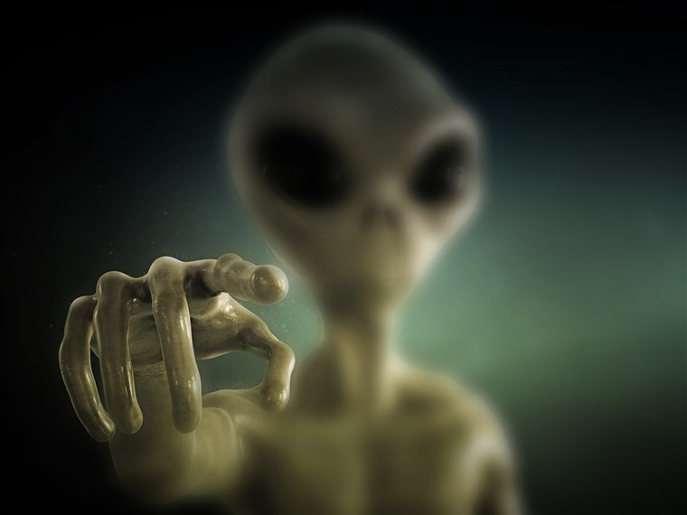

By Nisith DeSilva

For centuries, we humans have believed in the possibility of life outside of our home planet; often creating numerous tales and theories along the way to support our various opinions. These spawn various works of fiction including movies, books, tv shows, music, and more. But we have yet to find a definitive answer to the question: Are we really alone in the universe? Well here’s a timeline of aliens and alien references in pop culture.
Even before the first “official” UFO sighting, the belief that aliens existed and were one day going to invade our world stood strong in the world of science fiction. One of the best examples of this is H.G. Wells’ ‘The War of the Worlds’, which even featured one of science fiction’s first interplanetary battles. The basic premise is that Martians (aliens from Mars) have come down to Earth (specifically England) and plan to use the planet as a feeding ground, while the humans are powerless to stop them. What is particularly interesting about this story is the fact that Martians are portrayed as giant, worm-like monsters with tentacles protruding from their mouths; in stark contrast to the ‘grey aliens’ that are often used as the base image for aliens nowadays.
Up until this point in time, the idea of aliens and alien invasions were still more fantasy than reality, due to the fact that no one had hard proof they existed. However, on June 24, 1947, a pilot named Kenneth Arnold reportedly saw a ‘saucer-like’ aircraft flying overhead, which lead to the popular term ‘flying saucer’ being coined. The one problem was that Arnold had no photographic or video evidence of his claims, but still maintained what he saw that fateful day was real. Nonetheless, flying saucers were quickly embraced by popular culture, showing up almost everywhere including movies, comics and toys. Strangely enough, after this initial sighting, many more sightings occurred, increasingly mentioning ‘saucer-like’, silvery objects. This was the result of a cultural feedback loop where UFOs became so popular that as soon as we noticed something strange in the sky, it was automatically assumed to be a UFO.
Another alien related piece of fiction, this time in the format of a movie. ‘Invasion of the Body Snatchers’ follows an alien invasion of sorts where mysterious spores from outer space have arrived on Earth, where they take root and grow into seed pods, which in turn replicate human appearances of the people they encounter. Invasion of the Body Snatchers takes a more psychological approach, as it deals more with human nature and whether we can fully trust each other, than with the full concern of an alien invasion.
No explanation needed here. (It's common knowledge at this point)
Even though E.T. may be a story about an alien, it still managed to strike a chord with kids and adults alike. The movie is often associated with the scene where the main character, Elliot flies over the forest with the titular E.T. on a bicycle, which has often been described as one of the most “magical scenes in cinema”. Over the course of the film Elliot befriends an alien who is dubbed “E.T.” (extraterrestrial) who is stranded on Earth. Elliot and his siblings attempt to return E.T. to his home planet while trying to hide his existence from the government.
Even though the Simpsons does not specifically focus on aliens, even minute references go a long way due to the show's popularity and long running time. The two main aliens that often make cameos and occasional appearances are the Rigellians, Kang and Kodos. They often are the center of nonsensical plots during specials like 'Treehouse of Horror' and whenever they make appearances in general. In the more recent episodes, the two aliens are often making plans to destroy the earth and enslave humans in a number of different ways, (like running for presidency of the United States) showing that at this point in time, aliens are no longer really taken seriously and are used more for gag humour and as parodies.
Men in Black finally managed to somewhat bring back the popularity of aliens, but in a different way than previously done before. Unlike previous alien related movies which were normally sci-fi, and a bit lacking in physical action, Men in Black brought a fast paced movie to viewers which showcased different interactions between the agency and both peaceful and potentially harmful aliens. The movie mainly focused on the idea of saving the world from an impending threat, and preserving peace, and was much more fast-paced and action-filled than most alien-related movies that came before.
Now, I know that I missed quite a few important pop culture references, but this is just a very basic rundown. In the 21st century, a number of alien related movies have been released; there has been mixed reception, but I doubt aliens are going to exit our lives anytime soon.
Want to read again?